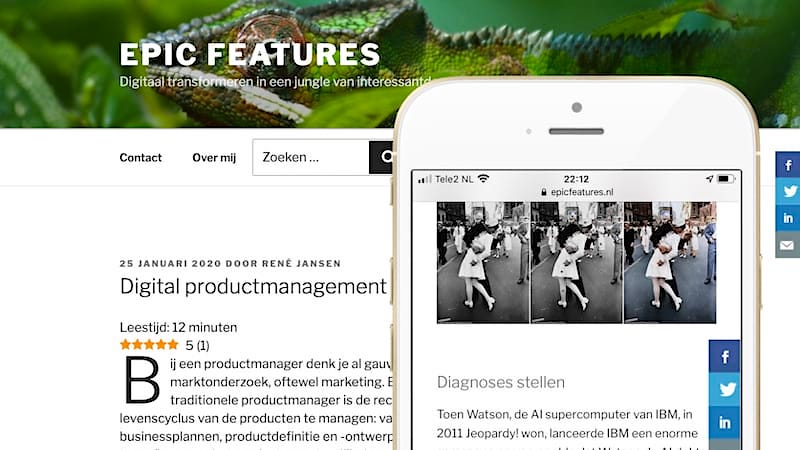

<div class="port-holder">
	<div class="row">
		<!-- Project Close Button -->
		<div class="col-md-12">	
			<ul class="pclose">
				<li>
					<a id="portfolio-close" href="#" title="Close Project">
						<i class="fa fa-times-circle-o"></i>
					</a>
				</li>
			</ul>	          	
		</div>
		<!--/Project Close Button -->
		<!-- Project Title -->
			<div class="project-title">	
				<h1>Weblog Epic Features</h1>
				<p>Digitalisering / Blog</p>
			</div>
		<!-- /Project Title end-->

		<!-- Project slider -->
			<div class="row">
				<div></div>
			</div>
		<!-- /Project slider -->		
		<div class="col-md-12">
			<div class="portfolio-media">
	              <div id="project-carousel" class="owl-carousel owl-theme">
                      <div class="item"><a href="https://www.epicfeatures.nl" target="_blank"></a></div>
	              </div>
			</div>
		</div>
		<!-- /Project slider end-->

		<!-- Project Details -->
			<div class="col-md-12">
				<h2>WEBLOG EPICFEATURES.NL</h2>
                <p>Ik onderhoud een <a href="https://www.epicfeatures.nl" target="_blank">weblog</a> over diverse onderwerpen met betrekking tot digitalisering. Om twee redenen deel ik graag mijn kennis. Ten eerste worden er over digitalisering veel zinnige dingen gezegd, maar naar mijn idee hoor en lees ik minstens zoveel kletskoek. Om de zin en onzin van elkaar te scheiden, ben ik deze weblog begonnen. Een andere reden is dat de digitale wereld momenteel zo snel verandert, dat het voor de gemiddelde werknemer nauwelijks te bevatten is. Ik vind dat iedere professional moet kunnen inschatten wat het effect van digitalisering is op je vakgebied, bijvoorbeeld cloud, robotisering, artificial intelligence, internet of things, de digitale werkplek, enz. </p>
			</div>
		<!-- /Project Details end -->
	</div>
</div>